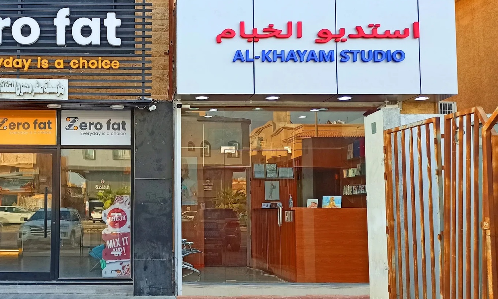

صور الوثائق الرسمية
صور الجواز، الهوية الوطنية، الإقامة والتأشيرات بمقاسات وتجهيز مناسب للوثائق الرسمية.

فرع KH4 لخدمات الصور الرسمية والتصوير الشخصي وطباعة وترميم الصور، مع وصول مباشر إلى موقع الفرع وواتسابه وساعات العمل.
صور الجواز، الهوية الوطنية، الإقامة والتأشيرات بمقاسات وتجهيز مناسب للوثائق الرسمية.
صور شخصية ورسمية بخلفية وإضاءة مناسبة للاستخدام المهني والشخصي.
طباعة الصور بمقاسات مختلفة، بما في ذلك خدمات الطباعة السريعة المتاحة في الفرع.
ترميم وتحسين الصور القديمة مع إمكانية مسحها ضوئيًا وتحويلها إلى نسخة رقمية.
تعديل وتجهيز الصور بما يناسب الاستخدام المطلوب مع الحفاظ على مظهر طبيعي وواضح.
تجهيز صور التأشيرات والسفارات الدولية بحسب المقاس والمتطلبات المطلوبة.
تأسس ستوديو الخيام عام 1991، ويقدم فرعنا في الخبر – العزيزية خدمات التصوير الفوتوغرافي وصور الوثائق الرسمية، بما يشمل صور الجوازات، الهوية الوطنية، الإقامة، التأشيرات، الصور الشخصية والرسمية، وطباعة وترميم الصور. نركز على جودة التصوير وسرعة تجهيز الصور ودقتها حسب المتطلبات الرسمية.
حي الخزامى، الخبر